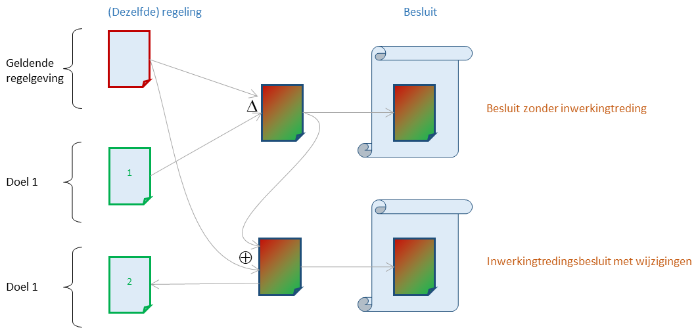

Inwerkingtredingsbepaling
Achtergrond
Voor de inhoud van elk besluit moet bekend zijn wanneer het in werking treedt, waarmee gezegd wordt dat op dat moment (de wijziging van) de regelgeving zoals beschreven in het besluit juridisch gezien ontstaat. Dat kan op verschillende manieren:
| Manier | Toelichting |
|---|---|
| Van rechtswege | Er kan wet- en regelgeving zijn die aangeeft wanneer de inwerkingtreding zal zijn als daarover niets in het besluit over gezegd wordt. Meestal is dat gerelateerd aan de datum van bekendmaking. |
| In besluit | In het besluit wordt een datum van inwerkingtreding genoemd. Dit kan voor bepaalde delen van het besluit een verschillend moment zijn. |
| Apart besluit | In het besluit wordt aangegeven dat inhoud nog niet in werking treedt en in een apart besluit (het inwerkingtredingsbesluit) de inwerkingtreding vastgesteld zal worden. Bijvoorbeeld via een zin als Deze wet treedt in werking op een bij koninklijk besluit te bepalen tijdstip, dat voor de verschillende artikelen of onderdelen daarvan verschillend kan worden vastgesteld. Zie ook voorbeeld. |
| Conditionele inwerkingtreding | In het besluit wordt aangegeven dat (bepaalde delen van) het besluit tegelijk met een (deel van) een ander besluit in werking treedt. Bij bekendmaking van het besluit zal het andere besluit nog niet bekendgemaakt zijn, en/of de inwerkingtreding van dat besluit wordt via een apart inwerkingtredingsbesluit geregeld. |
Juridisch is een voorwaarde voor de inwerkingtreding dat het besluit bekendgemaakt moet zijn. Het is juridisch soms wel mogelijk om een besluit vóór de inwerkingtreding geldig te laten worden. Dan is er sprake van terugwerkende kracht. Er wordt naast het moment van inwerkingtreding ook aangegeven vanaf welk (eerder) moment (de wijziging van) de regelgeving geldig wordt.
Daarnaast kan er ook een einddatum van de geldigheid van (onderdelen van) het besluit opgegeven worden. De betekenis hangt ervan af waar de einddatum betrekking op heeft:
Als de einddatum genoemd is voor een nieuwe regeling of een nieuw informatieobject houdt de regeling c.q. informatieobject op dat moment juridisch op geldig te zijn.
Als de einddatum betrekking heeft op een wijziging of vervanging dan houdt dat in dat de wijziging of vervanging op dat moment teruggedraaid wordt. De regeling of het informatieobject zijn vanaf dat moment juridisch nog wel geldig, maar voor de bepaling van de geconsolideerde regeling of informatieobject speelt de wijziging/vervanging geen rol meer.
In een besluit kan ook een einddatum voor een bestaande regeling genoemd worden. Juridisch wordt dat niet geformuleerd als een einde van de geldigheid van de regeling, maar als een intrekking van de regeling. Het einde van de geldigheid van de regeling wordt dan bepaald door de inwerkingtreding van de intrekking.
Concept- en ontwerpbesluiten kunnen niet in werking treden en zullen ook geen inwerkingtredingsbepaling hebben. Een inwerkingtredingsbepaling of wijziging daarvan kent zelf geen inwerkingtreding, het is juridisch van kracht zodra het bekendgemaakt is.
Vormvereisten van de standaard
In het geïntegreerd proces van bekendmaken en consolideren begint het bevoegd gezag met het identificeren van (wijziging van) regelgeving die op een bepaald moment in samenhang geldig worden. Het bevoegd gezag zal gedurende het proces ook bepalen welk moment dat is. Het bepaalt daarmee de tijdstempels: inwerkingtreding, terugwerkende kracht en eventueel de einddatum van een geldigheid. De einddatum betreft de einddatum van wijzigingen/vervangingen; de intrekking van een regeling wordt als wijziging van regelgeving in het besluit opgenomen.
De inwerkingtredingsbepalingen in een besluit zijn een uitdrukking van de tijdstempels die in het overkoepelde proces worden bepaald:
Als de (wijziging van) regelgeving geassocieerd met één doel in één besluit worden opgenomen en het besluit geen (wijziging van) regelgeving geassocieerd met een ander doel bevat, dan kan de inwerkingtredingsbepaling net als in de huidige praktijk opgeschreven worden als geldend voor het hele besluit.
Als een besluit (wijziging van) regelgeving geassocieerd met meerdere doelen bevat, dan wordt voor elk van die doelen een inwerkingtredingsbepaling opgenomen.
Als de (wijziging van) regelgeving geassocieerd met één doel in meerdere besluiten opgenomen worden, dan worden de tijdstempels in het eerste besluit opgenomen. In de overige besluiten wordt als (conditionele) inwerkingtredingsbepaling opgenomen dat deze in werking treden tegelijk met het eerste besluit. Als de inwerkingtredingsbepaling in het eerste besluit niet meer correct is, kan in een later besluit die bepaling uit het eerste besluit gewijzigd worden. Dit wordt opgenomen als een rectificatie van een besluit.-->
De inwerkingtredingsbepaling heeft dezelfde vorm als in de huidige praktijk. Er kan een inwerkingtreding genoemd worden of aangegeven worden dat over de inwerkingtreding op een later moment besloten wordt, terugwerkende kracht en een einddatum kunnen genoemd worden. Ook de formulering ... treedt in werking op een bij ... besluit te bepalen tijdstip, dat voor de verschillende artikelen of onderdelen daarvan verschillend kan worden vastgesteld. kan nog steeds opgenomen worden. Als bij de inwerkingtreding daadwerkelijk maar een deel van de nieuwe versie of van de wijzigingen in werking treedt, dan bevat het besluit niet een opsomming van de artikelen maar moet de door de standaard ondersteunde gedeeltelijke inwerkingtreding toegepast worden.
Niet alle inwerkingtredingsbepalingen uit de huidige praktijk zullen nog voorkomen. In de huidige praktijk wordt nu niet altijd een duidelijk onderscheid gemaakt naar het moment van inwerkingtreding (dus naar de verschillende doelen). Een besluit bevat dan een doorlopende opsomming van de nieuwe versies en/of van wijzigingen van regelingen. Pas uit de inwerkingtredingsbepalingen (die in een apart besluit kunnen staan) blijkt welke voorschriften en wijzigingen bij elkaar horen. In het geïntegreerd proces van bekendmaken en consolideren wordt ervan uitgegaan dat het bevoegd gezag al voor het opstellen van een besluit een beeld heeft van de samenhang, en dat in het besluit ook tot uitdrukking brengt. Als de samenhang op een later moment (voor de daadwerkelijke inwerkingtreding) niet correct blijkt te zijn, dan is dat te corrigeren via een nieuw besluit, bijvoorbeeld via het mechanisme van gedeeltelijke inwerkingtreding.
Gedeeltelijke inwerkingtreding
Als het bevoegd gezag de (wijziging van) regelgeving bekendmaakt via meerdere besluiten waarbij eerst de nieuwe regelgeving zonder datum van inwerkingtreding wordt bekendgemaakt en als laatste een inwerkingtredingsbesluit wordt bekendgemaakt, dan kan het voorkomen dat gedurende het proces nieuwe inzichten zijn ontstaan over de momenten waarop de nieuwe regelgeving in werking moet treden. Bijvoorbeeld omdat er eerst van was uitgegaan dat de nieuwe regelgeving in één keer in werking zou treden, maar gedurende het besluitvormingsproces blijken een aantal onderdelen controversieel en wordt besloten om de nieuwe regeling eerst zonder deze onderdelen in werking te laten treden; over de controversiële onderdelen wordt doorgepraat en die kunnen eventueel (na aanpassingen) op een later tijdstip alsnog in werking treden.
In de huidige praktijk wordt dat gedaan door in het inwerkingtredingsbesluit de individuele wijzigingen van een regeling of individuele onderdelen van een regeling aan te wijzen en daarvoor een inwerkingtredingsbepaling op te nemen. Waar nodig kan de tekst nog geamendeerd worden door additionele wijzigingen in het inwerkingtredingsbesluit op te nemen. Die aanpak past niet bij het geïntegreerd proces van bekendmaken en consolideren waar het vertrekpunt voor een besluit altijd een (nieuwe) versie van een regeling of informatieobject is. De standaard ondersteunt de gedeeltelijke inwerkingtreding via het maken van een nieuwe versie die via het renvooimechanisme in het besluit opgenomen wordt.

De nieuwe versie wordt in twee stappen gemaakt. Eerst wordt een versie gemaakt waarin aangegeven wordt welke nieuwe regelgeving uit de eerder bekendgemaakte besluiten zonder verdere wijziging overgenomen moet worden (in bovenstaand voorbeeld: welke onderdelen van versie 1 moeten in de geldende versie overgenomen worden). Daarna worden in die versie eventuele wijzigingen aangebracht.
In het voorbeeld wordt gedeeltelijke inwerkingtreding geïllustreerd voor een regeling. Als een bepaald type informatieobject ook via een renvooimechanisme te wijzigen is, kan daarvoor de gedeeltelijke inwerkingtreding op een vergelijkbare manier aangegeven worden: eerst een versie maken waarin twee versies van een informatieobject uit eerder bekendgemaakte besluiten samengevoegd worden, daarna worden eventuele wijzigingen aangebracht.
De inwerkingtredingsbepaling regelt bij de gedeeltelijke inwerkingtreding niet de inwerkingtreding van het oorspronkelijke besluit maar van de nieuwe versie die via het renvooimechanisme in het inwerkingtredingsbesluit is opgenomen.
Vormgeving van gedeeltelijke inwerkingtreding
In STOP 1.3.0 wordt gedeeltelijke inwerkingtreding nog niet ondersteund.